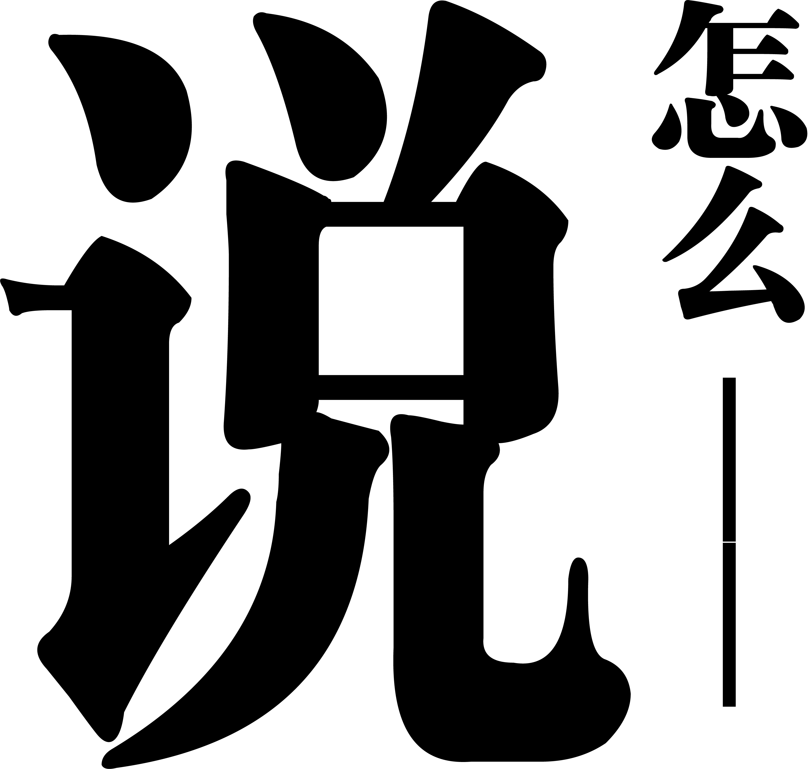

新盐要闻 | 说说吴语故事
XINYAN
BAY
BAY

文字内容标题
这里放正文内容不知道为什么到了第三行它不换行了很无奈希望换成中文能好一点不行就把图放进去能好一点吗我也不知道啊啊啊啊啊啊啊啊啊哦换成中文可以了虽然我还是不知道为什么但是可以了就可以了吧
下边栏结束
新盐要闻 | 说说吴语故事
这里放正文内容不知道为什么到了第三行它不换行了很无奈希望换成中文能好一点不行就把图放进去能好一点吗我也不知道啊啊啊啊啊啊啊啊啊哦换成中文可以了虽然我还是不知道为什么但是可以了就可以了吧
下边栏结束